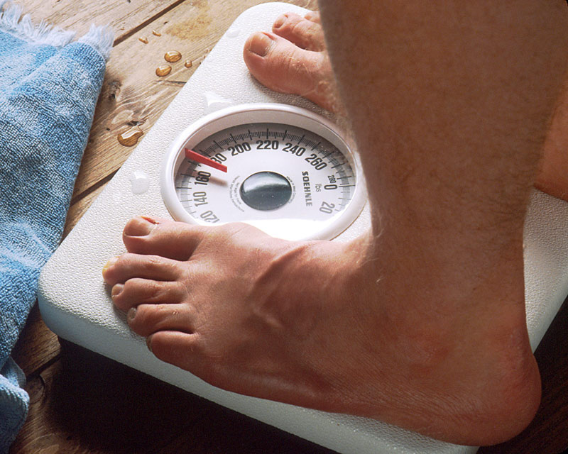
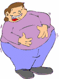

<HTML>
<!DOCTYPE html>
<html lang="en">
<title>LAB9v1</title>
<script type="text/javascript">
// *****************************************
// Program: LAB9.html
// Created by: Levi Cohen
// Date: 3/2/25
// Function: Compute Body Mass Index Value
// *****************************************
var feet;
var inches;
var pounds;

feet=prompt("feet","5");
inches=prompt("inches","11");
pounds=prompt("pounds","280");

TotalInches = eval(feet*12) + eval(inches);
var bmi = Math.round(pounds * 703 * 10 / TotalInches /TotalInches) / 10;
document.write("<BR>","Body to Mass Index is: ",bmi);
      
if (bmi <= 12)
	{document.write("<BR>","Out of Range")}
else
	{if (bmi > 12 && bmi < 18.5)
		{document.write("<BR>","Under Weight", "","</IMG>")}
	else
		{if (bmi >= 18.5 && bmi < 25)
			{document.write("<BR>","Normal Weight", "","</IMG>")}
		else
			{if (bmi >= 25 && bmi <30)
				{document.write("<BR>","Over Weight", "","</IMG>")}
			else
				{if (bmi >=30)
					{document.write("<BR>","Obese", "","</IMG>")}
				else 
					{}
}}}}
</script>
</body>
</html>